Luxury Walnut Kitchen
Full walnut kitchen with coffered ceiling, brass fittings, and onyx stone backsplash panels.
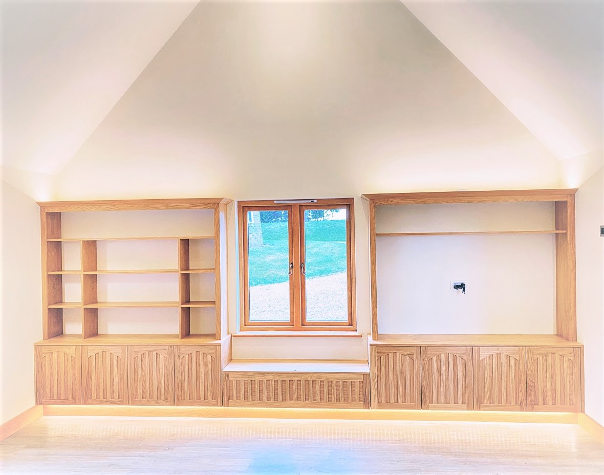
Oak Library & Window Seat
Floor-to-ceiling oak shelving with detailed panelled doors, window seat, and integrated LED uplighting.
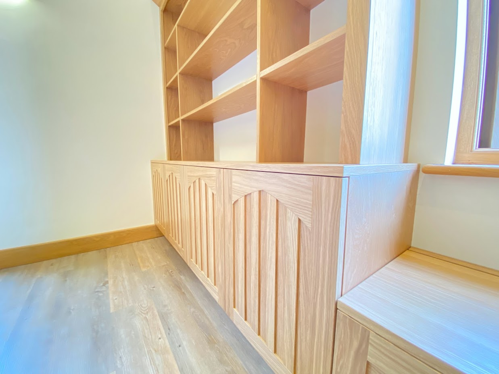
Panelling Detail
Precision joinery with decorative gothic-arch panelling in solid European oak.
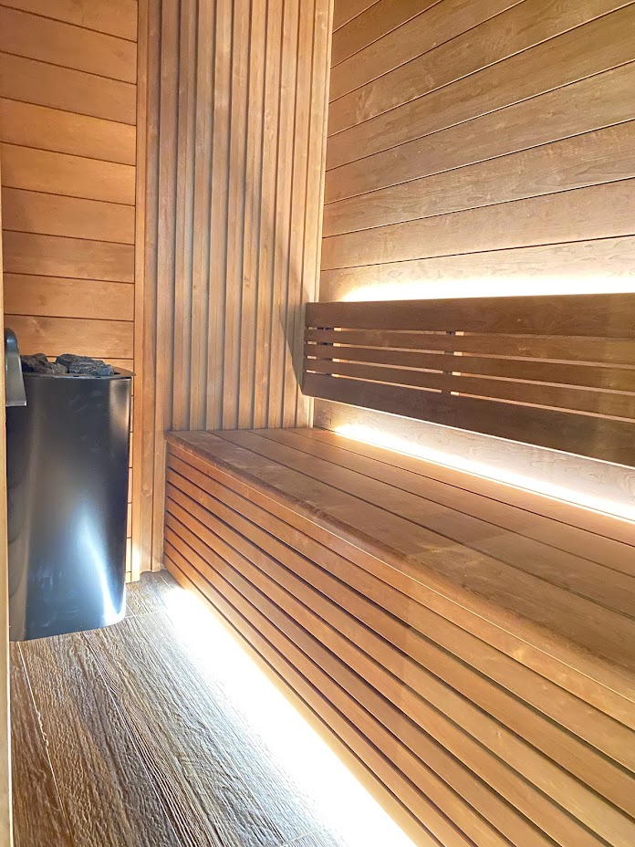
Custom Sauna Build
Bespoke sauna interior with slatted benching, integrated LED strip lighting, and modern heater installation.
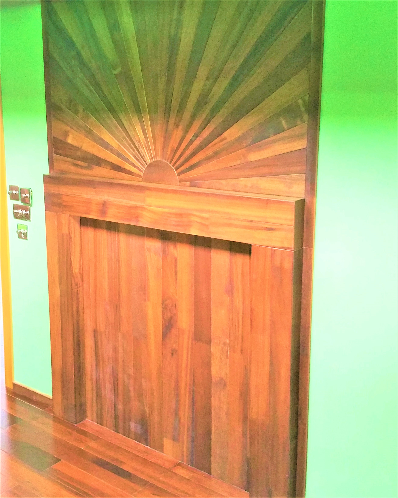
Art Deco Sunburst Panel
Statement entrance panelling with radiating hardwood sunburst detail in rich mahogany.
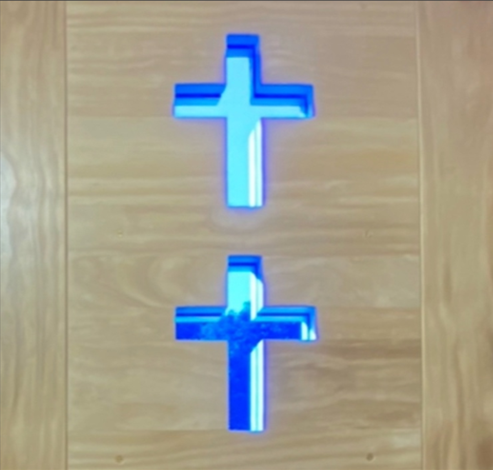
Church Doors
Bespoke ecclesiastical doors in ash with inset blue stained glass cross details.
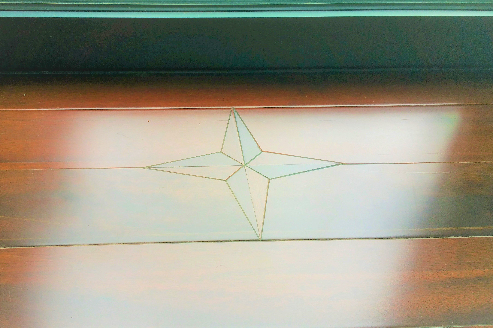
Compass Star Decking
Precision inlay compass-star motif set into rich hardwood decking with glass balustrade surround.
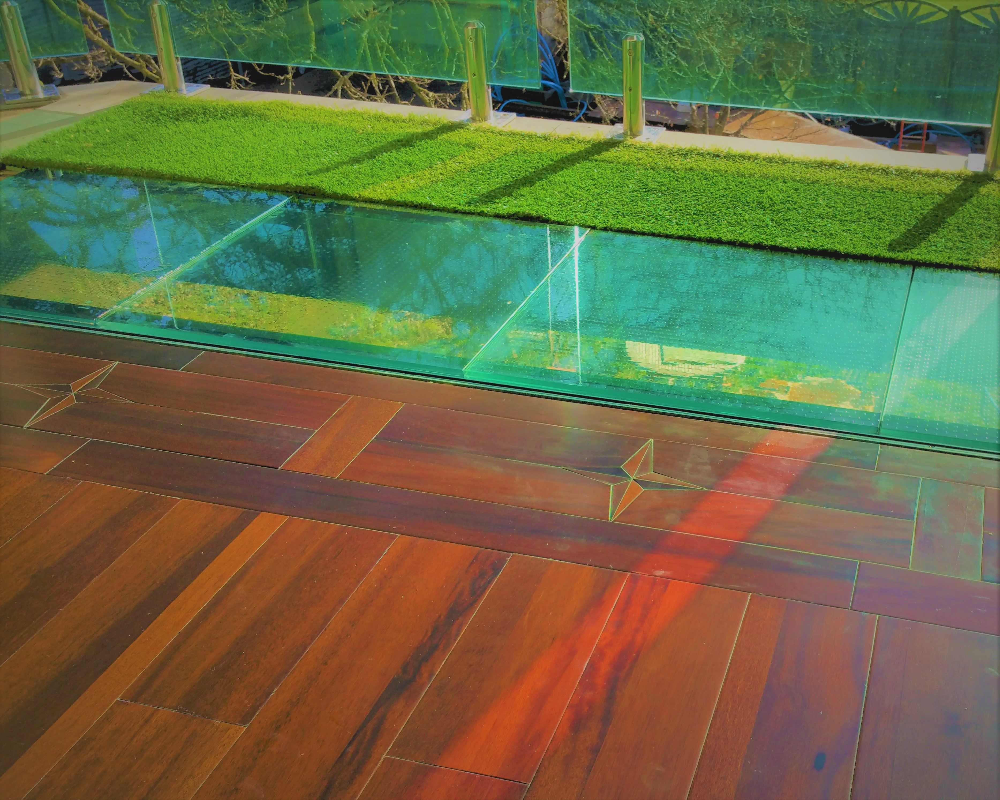
Star Inlay Detail
Intricate four-point compass star inlay with contrasting timber veneers in a hardwood floor.
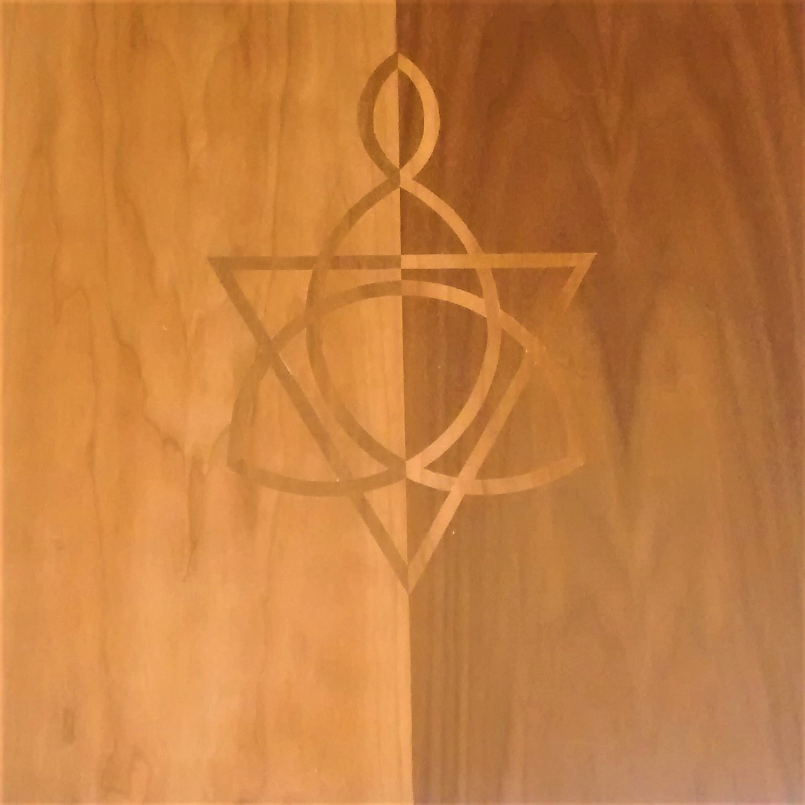
Celtic Cross Inlay
Hand-cut Celtic knot cross motif inlaid in contrasting cherry and maple veneers.
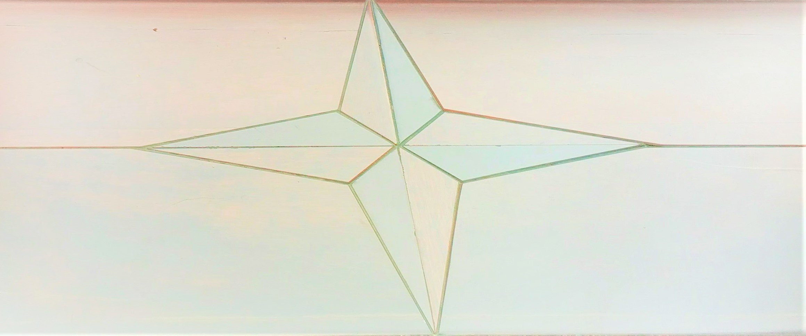
Compass Rose
Delicate compass rose inlay with tonal gradients across multiple timber species.
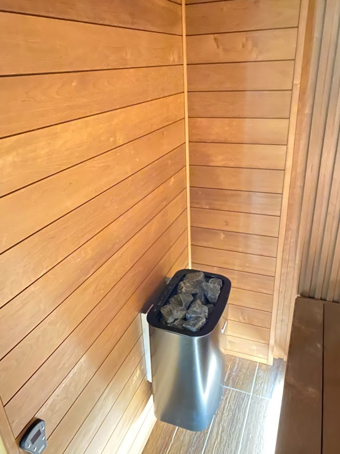
Sauna Interior Detail
Ergonomic benching with precision tongue-and-groove joinery in heat-treated timber.
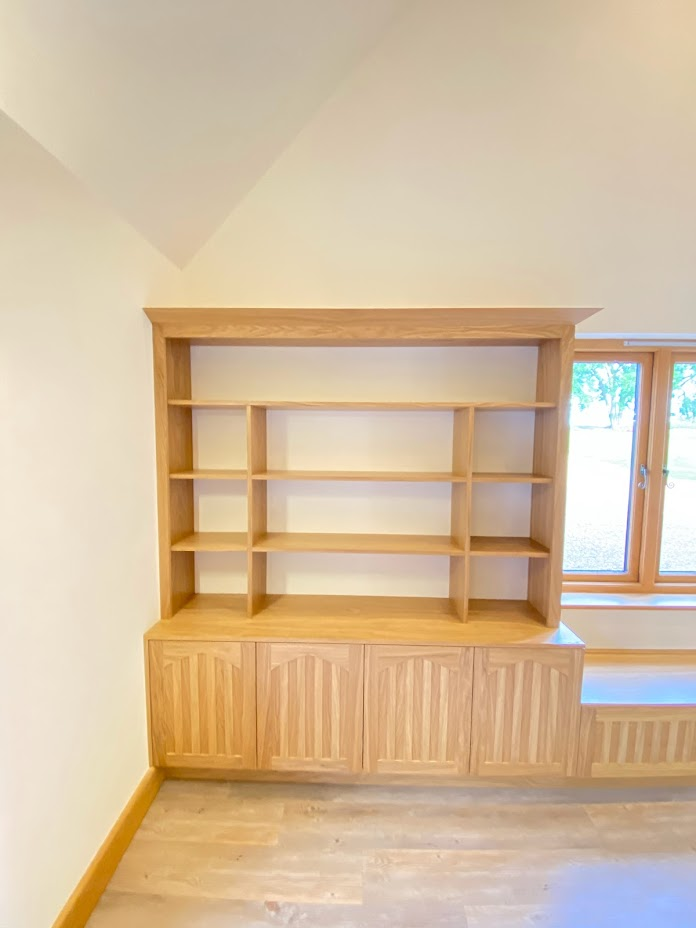
Library Perspective
Angled view showing the depth and craftsmanship of the fitted shelving and window seat integration.